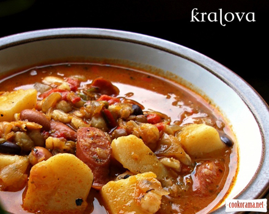
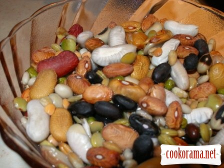
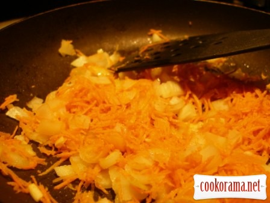
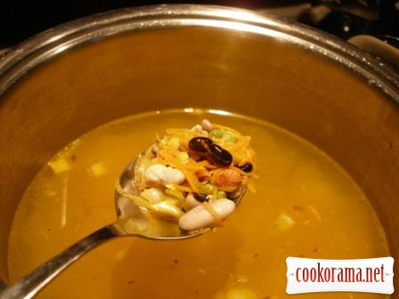
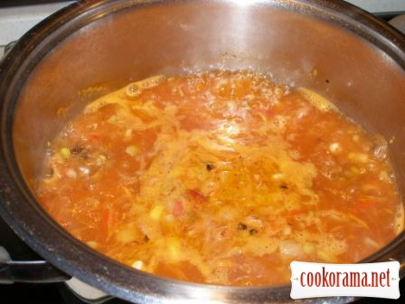
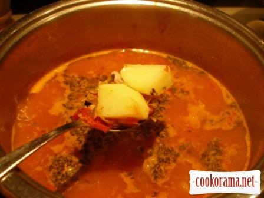
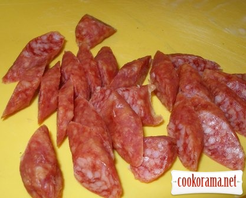
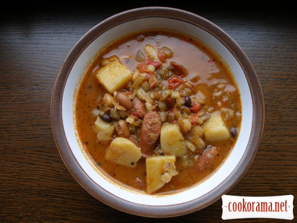

Тосканський суп

Інгредієнти: сочевиця 150 г. боби 150 г. квасоля 150 г. картопля 2 шт. морква 2 шт. цибуля ріпчаста 1 шт. часник (зубки) 2 шт. томати 2 шт. олія оливкова 70 г. ковбаски мисливські 4 шт. сіль перець чорний мелений трави італійські
Кулінарний рецепт тосканського суп

Боби замочити у холодній воді заздалегідь, — наприклад, на ніч.

Моркву натерти, цибулю і часник подрібнити. Підсмажити на олії до золотистого кольору.

Підсмажені овочі покласти у кастрюлю, додати боби і залити водою. Довести до кипіння.

З помідорів зняти шкірку, подрібнити їх і теж покласти у кастрюлю. Знову довести до кипіння. Варити 30 хв.

Почищену і порізану кубиками картоплю додати до супу. Довести до кипіння і варити ще 20 хв. Додати італійські трави.

Ковбаски порізати і додати до супу. Посолити, поперчити і варити ше 10 хв.

Перед самою подачею можна зробити домашні крутони і покласти в суп, — це нереально смачно, повірте мені!